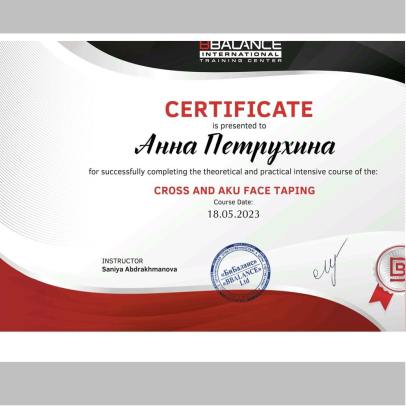
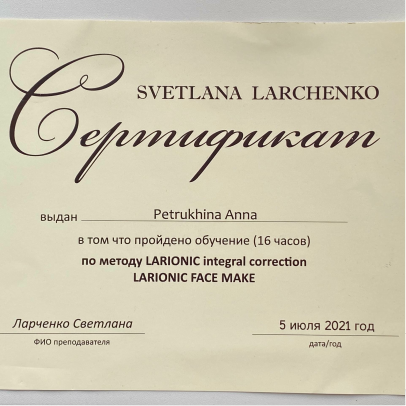
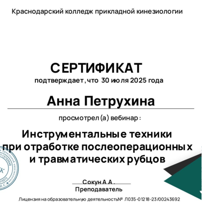
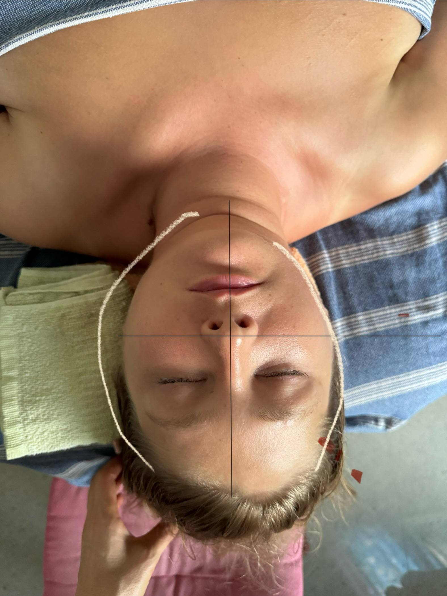
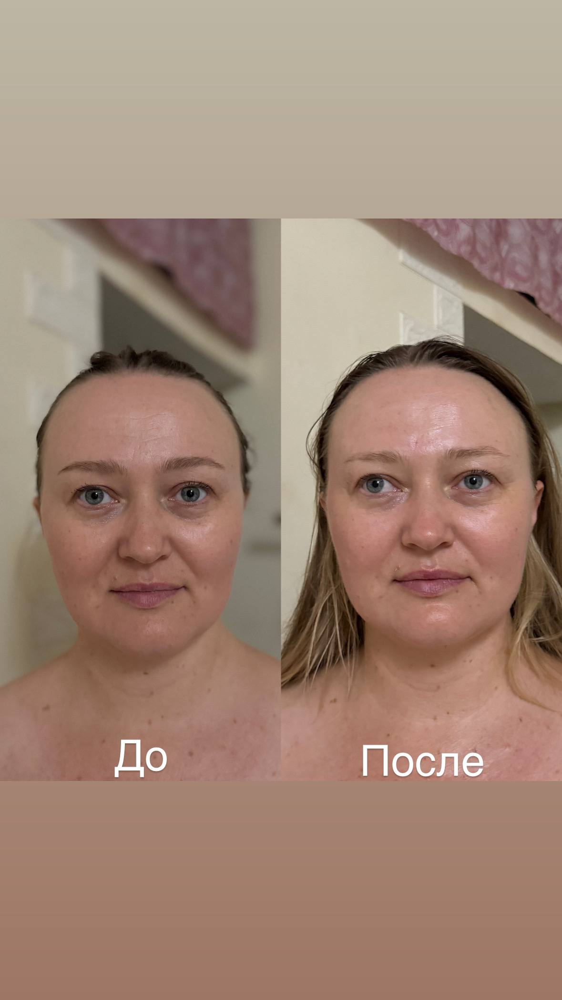

Возвращаю коже молодость и телу лёгкость через точные руки и глубокое понимание процессов старения.
Мой путь в телесных практиках начался с личного опыта. С детства я сталкивалась с межрёберной невралгией и сильными приступами, когда было трудно даже вдохнуть. Со временем я поняла: чтобы чувствовать себя хорошо, важно не просто снимать симптомы, а восстанавливать тело комплексно.
В 2017 году я начала обучение тайским телесным практикам, а в 2019 освоила японский массаж Кобидо. В 2020 году прошла программу переподготовки по работе с ограничивающими движение паттернами, где глубоко изучала фасциальный массаж и теорию фасциальных поездов Майерса.
Практика помогла мне полностью решить проблему с невралгией, вернуть лёгкость движения и возможность спокойно заниматься физической активностью.
Дальше я продолжила изучать Цигун, Дао, китайские массажные техники и гуаша, а также ТКМ. В 2025 году прошла обучение акупунктурному лифтингу и инструментальной работе с рубцами и шрамами.
Сегодня я постоянно развиваюсь и не работаю по одному шаблону: миксую техники и подбираю их под особенности и запрос каждого человека. Для меня массаж — это прежде всего про восстановление, свободу движения и контакт с собственным телом.
Работаю не по шаблону. Каждое лицо и тело получают свой протокол.
Важно не просто сделать процедуру, а понять, что нужно именно вам.
Кожа становится плотнее, тело легче. Это замечают окружающие.







Приходите на первую консультацию. Посмотрим на кожу, обсудим задачи и составим план.
Записаться